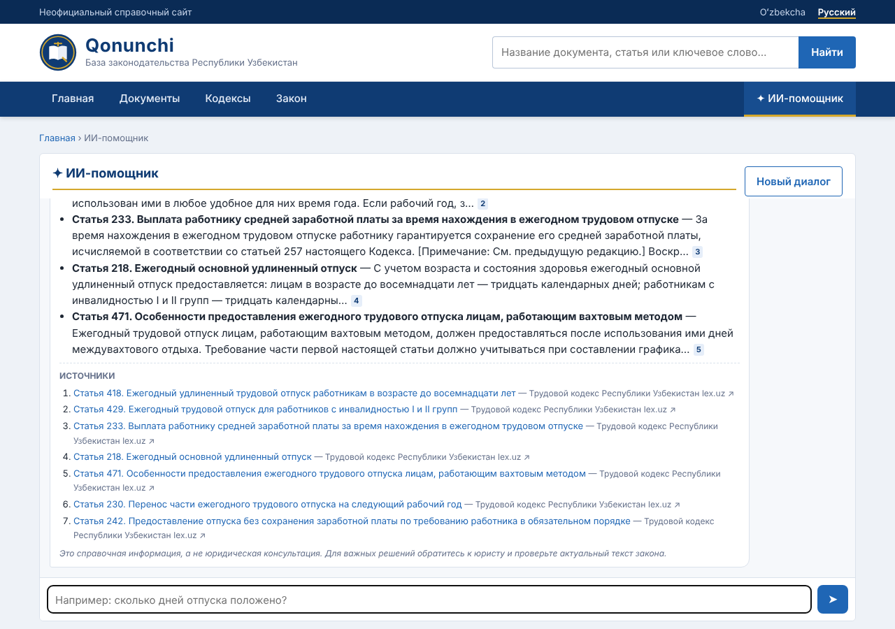
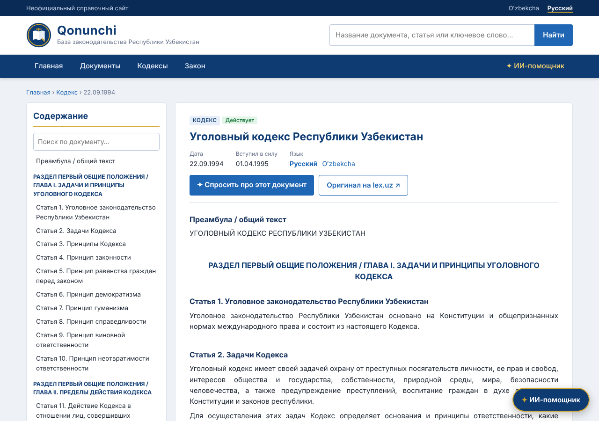

Personal project · Uzbek & Russian · 2026
Qonunchi: a legal assistant for Uzbekistan, built on RAG
Ask a question about Uzbek law in Uzbek or Russian. Qonunchi searches 30,125 official documents from lex.uz, answers in the language of the question and quotes the exact article it relied on. Every change to the pipeline is checked against a 100-question test set.
The public demo is limited to 30 questions per hour per visitor and 200 questions per day in total, so it may say the daily limit is reached.
Results
LEX_100 is a public benchmark of 100 legal questions. Human graders gave the first version 59.5; the best team scored 81.5. The 92.5 for the current version comes from eval/judge_eval.py, which agrees with the human grades on 81 of 100 answers and runs about 0.5 points above them, so I treat it as roughly 89–92 by human standards.
How it works


Evaluation
I built the evaluation before tuning anything, so every version has a number next to it.
- Retrieval (
eval/retrieval_eval.py): Hit@k and MRR against the expected document and article for each question. - Answers (
eval/judge_eval.py): an LLM judge grades each answer as correct, partial, wrong or no answer, using the reference answer and human-graded answers from other teams as examples. It was calibrated against the human grades before use. - Faithfulness: each citation carries a quote, which is matched back to the text of the cited article.
- Hold-out sets of 20 and 50 questions to catch overfitting to the main set.
One honest failure
Question 35: "Where is open data published?" The right answer is the portal data.gov.uz. Qonunchi answers in general terms and misses the portal name.
Why: the only document that names it is a Cabinet of Ministers resolution stored as one 56,000-character block. Its embedding is an average of many topics, so it ranks low, and the relevant sentence never reaches the model. The fix is to split long resolutions into smaller chunks, which is the next item on my list.
Stack
| Part | What I used |
|---|---|
| Data | 30,125 documents scraped from lex.uz, split by article (SQLite, ~1 GB) |
| Search | SQLite FTS5 (BM25) + fastembed with multilingual-e5-small on CPU |
| LLM | OpenAI API (gpt-5.4-mini for answers, gpt-4.1-mini as judge); Anthropic API supported |
| Backend | Python, FastAPI, a batch RAG API with API keys and rate limits |
| Deploy | Docker on AWS EC2 with 1 GB RAM, Caddy for HTTPS, one-command deploy script |